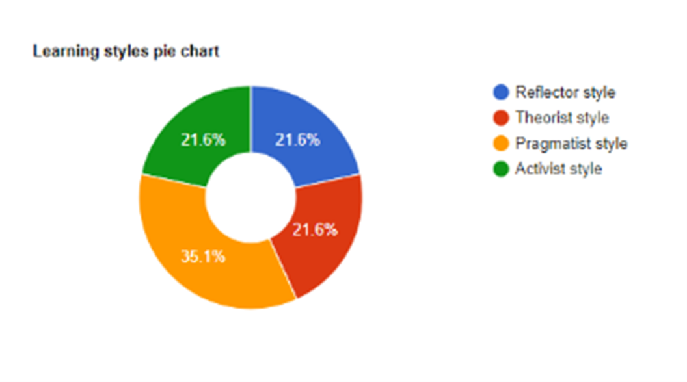
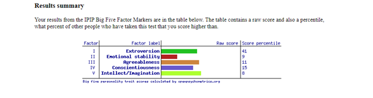

Greetings, my name is Roy Loh. I am a Malaysian Chinese international student studying information technology in RMIT university. I completed my WACE exams in 2020 but took a gap year due to Covid. I can speak English and mandarin. I enjoy watching videos on computer setups I cannot afford on the internet and anime in my free time. I work casually as a coffee barista at a hotel. As an international student in Melbourne, I find it quite challenging due to it being a new environment, however I am slowly getting used to the culture here. I dream to earn enough money so I can travel around the world. I aspire to work in the technology industry in the future and I hope to learn useful skills such as programming and broaden my knowledge regarding the world of tech.

The use of information technology has brought man on the moon. I believe that information technology is essential in our daily lives and is used by businesses to aid in creating, storing, and retrieving data and information. There are so many amazing feats that have been accomplished with the use of information technology such as cloud storage, which allows us to store terabytes of data and mobile app development, which has brought us phones with buttons to basically a mobile computer, capable of calling, texting, surfing the internet, taking pictures, gaming and many more. Even the gaming industry itself, back then I would be playing spider solitaire on the computer, just to kill time. Now, gaming itself can be a career. Gamers can stream on platforms like Twitch, and they are getting paid to have fun.
During the pandemic, I noticed that information technology played a significant role in our lives. The use of new innovations and designs aided in combating covid. Existing IT solutions were utilised in tracking and ensuring the spread of covid as well. There was also an increase in online shopping, according to Forbes the U.S. online retail has generated over 1.7 trillion dollars in revenue over the last two years. Sometimes. I think information technology is frightening in a sense that occasionally when I am surfing the internet, there are advertisements recommending me products like the ones I have searched for before.
Information Technology has brought us so far and continues to open so many opportunities to the world. The increase in demand for skills such as software development, mobile app development and cloud computing for storing data is constantly increasing, and with so much to learn and improve on, I want to gain the necessary skills to be part of this growing industry.
As of right now, I am very new to the world of information technology, however as of right now i do have interest in getting a job in software development, as I find this to be a very fulfilling career. Necessary skills in this career include programming, debugging and testing programs, problem solving skills, teamwork, and cloud knowledge. As someone who works casually, I believe that working in a team is essential however I would preferably work in a smaller group as I feel like a big group can be disorganized. My ideal job would require me to work not more than 40 hours a week, and I hope to earn a six-digit figure.
I hope to have a flexible job that allows me to work both from home and in the office as i find a change of scenery occasionally to be rather productive. Although being paid well is important, I would like a job that is not too stressful and would not cause me to be too burnt out for my other activities.

Based on an online Myers-Briggs test (www.16personalities.com), I was assigned with the personality trait of an adventurer. An adventurer is a person with personality traits that are introverted, observant, feeling and prospecting. They live an eventful life; they are being inspired by people and ideas and are constantly reinventing and experimenting on themselves while trying to explore other perspectives. Surprisingly enough, adventurers are introverted, although they do love connecting with others, they will have to recharge their social battery occasionally after going out and meeting new people. Adventurers can often hit the sweet spot when complimenting a person, and they are also sensitive and compassionate to other people’s feelings, often relating to others and trying to minimise conflicts. However, adventurers themselves can lose their tempers when facing criticism, and are often caught up in the heat of the moment.
According to my results using the learning styles quiz, my primary working style is pragmatist, meaning that I need a clear vision on how to apply what I have learnt into practice in the real world. Learning methods include practicals, problem setting, discussions and case studies. Pragmatists are constantly experimenting new theories and ideas to see if they work.
Finally, according to the big % factors test, I have scored lower than 50% of the people who have taken this test in factors such as extroversion, emotional stability, agreeableness, conscientiousness and intellect. This test is very vague and unclear; therefore, I would describe results and unreliable and inaccurate compared to the previous two tests done, except for factor 2.
My project idea is an AI shopping system. This can be used as a shopping assistant, helping the user find the best deals at affordable prices. The user logs in using a username and password, after logging in the user inputs desired product into the search engine, and the AI will perform a custom search across various products and categories throughout the internet, compare prices between similar products and output the cheapest and most reliable options. The AI will also have a feature that checks reliability of seller in terms of reviews in product quality and shipping time. The AI basically acts as a medium to search for the best possible deals throughout the internet through different websites without the user having to do it manually.
In 2020, during the pandemic, there was a great shift to online shopping. People throughout the world would purchase products of websites like Amazon and Alibaba. Recently, I was looking to buy shoes of the internet. However, there were issues such as difficulty in finding an affordable price for the shoe, unreliable websites and fake shoes being sold online. Eventually I was able to find a good website to purchase my sneakers, however I had wasted an hour doing research, when I could have been doing this assignment instead.
The user registration allows user to register details such as name, gender, age, email, date of birth, username and password onto the system. Details will be stored in a cloud database which will be encrypted to protect sensitive data and private information and can enhance communication security between servers and client applications. To ensure data security, the AI is only programmed to request and view certain data from both users and sellers, confidential information is hidden from those who are unauthorized. User can login by entering username and password. The system will refer to database to remember important details that will aid in shopping experience such as preferences, purchase history and location.
The multi agent support will guides and provide support to users throughout their shopping experience and sort out products based on the user’s preference. User can search for whatever product they want on the search engine. The system will look through its database for products that match whatever the user search for and display it on the screen along with details such as seller reviews and prices. If the product does not exist, it will display so. The AI will also run tests to check seller’s data and previous selling history to ensure the links to these products are safe and authentic, to prevent user from being scammed. Related products that are frequently bought along with the product will also be displayed.
Common tools used would be GitHub for hosting the platform for control and collaboration, Google cloud platform for storing data, slack for business communication, NPM as a package manager for JavaScript (which will be used for coding in both front-end and back-end application) and Jira for tracking bugs. A variety of programming languages will be utilised; however, JavaScript and Python are the most common languages used.
If this project succeeds, users will no longer have to waste time looking through multiple websites to second guess products or overpay for their goods. This can save users time and money and provide more confidence for online shoppers.